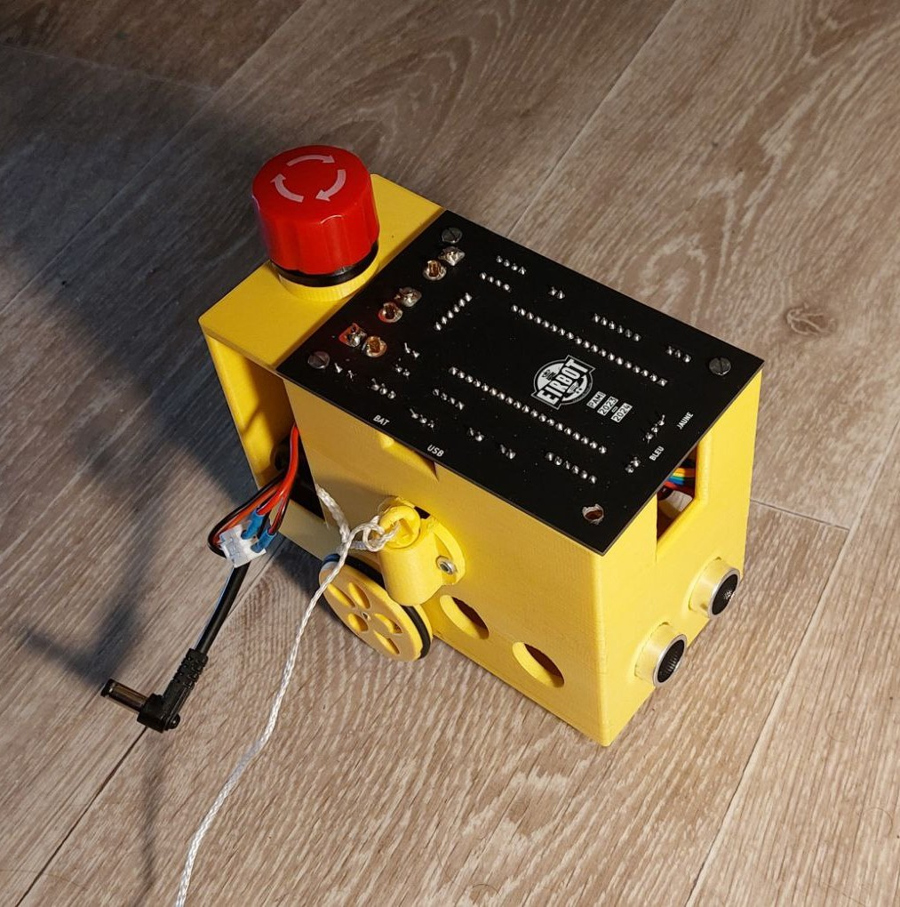
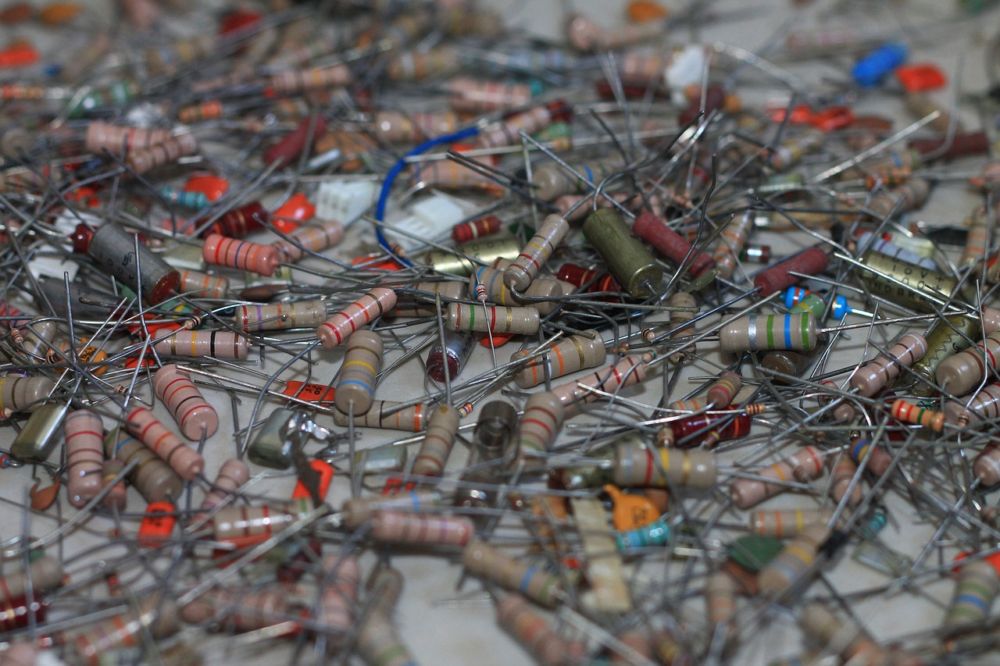
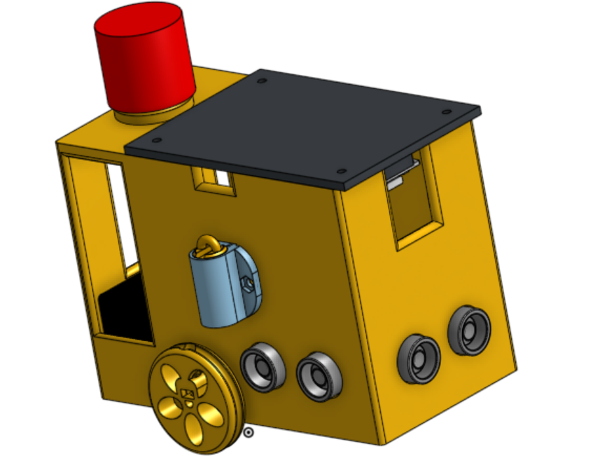
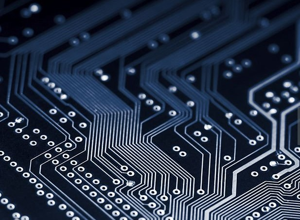
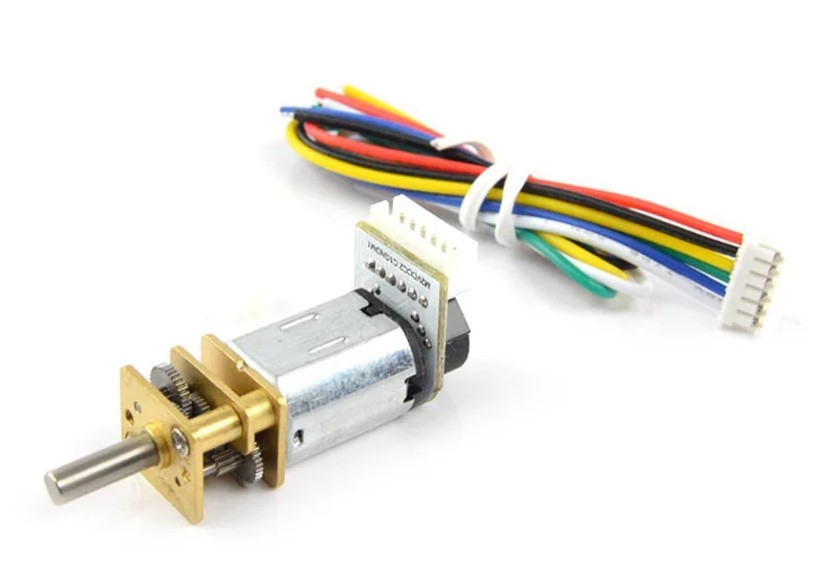
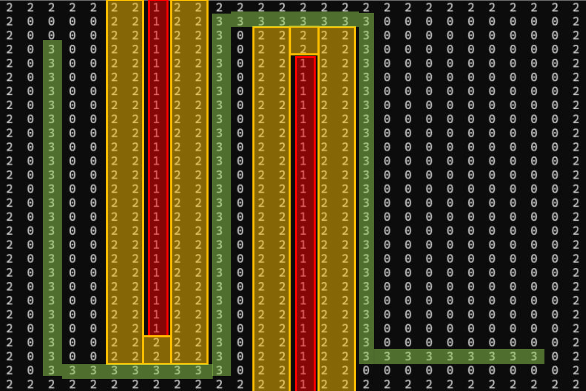

Pami
Introduction

Pami is a robot developed for the French Robotics Cup 2024. We developed this robot as a duo for Eirbot, a robotics association that takes part in the French Robotics Cup every year. This robot respects the strict static, electrical and behavioural rules of the cup. The biggest constraint is that it has to be very small and light.
Components

The choice of components is very important to respect the rules and efficiency: they must be compact, light and powerful. For this project, the price is also important.
Modelisation

The robot body must be able to accommodate all the components such as the battery, sensors, motors, microcontrollers, drivers.... It must also respect the dimensions imposed by the Coupe de France. Moreover, It has to be easy to use: changing the battery, a part or dismantling the robot must be simple.
Electronics

The main part of electronics is the interconnection between all the components, on a single small printed circuit. In addition, all the components need to be correctly powered.
Motor Control

Micromotors are selected on the basis of their weight, characteristics, price and the integration of an encoder. The encoder allows us to use a hand-made PID controller, running on an esp32. This part was the most difficult for us.
Wireless communication
The esp32 is equipped with a Bluetooth module and a Wi-Fi module. There is one pami server, and the others are clients: The pami server runs an asynchronous web server and the other pami can send it requests. Setting up a web server allows other devices to communicate with the server pami.
Obstacle detection and path-finding

We tried to implement path-finding algorithms on this robot. We had to use C and C++ to run them on esp32. The algorithms were designed but not implemented, due to the lack of preparation time before the Coupe de France.